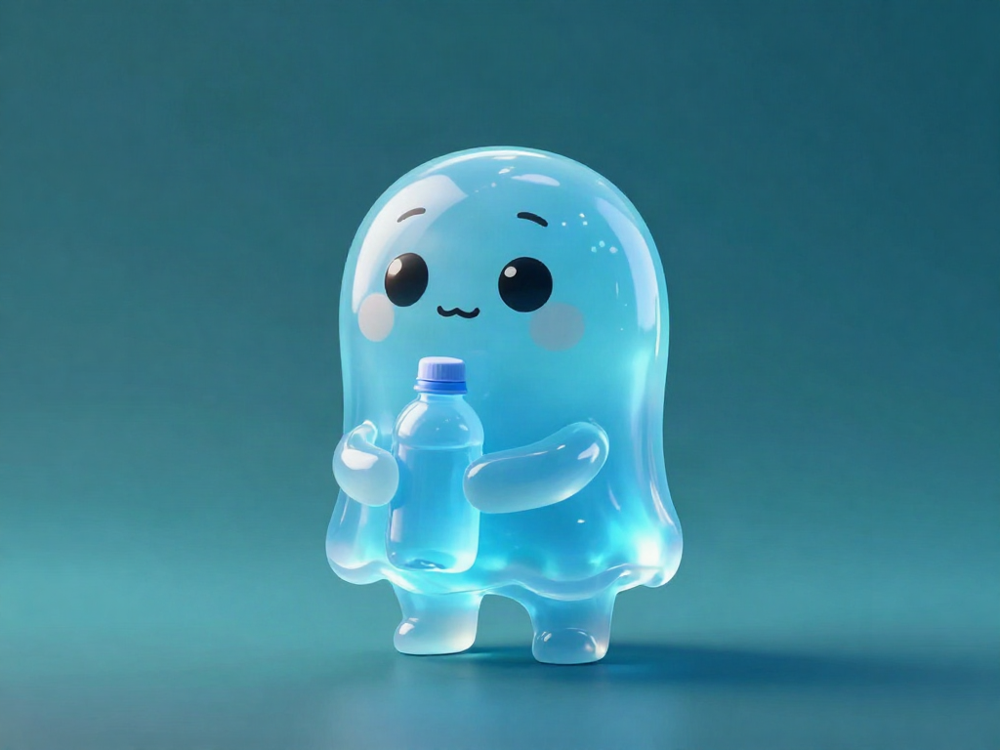
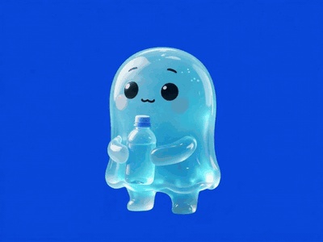
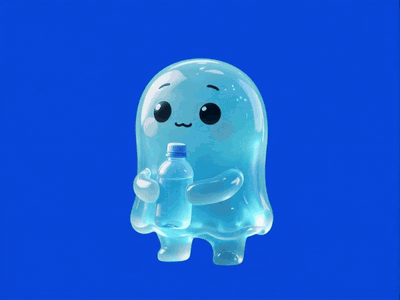
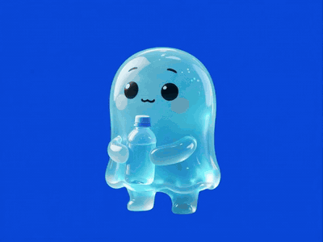
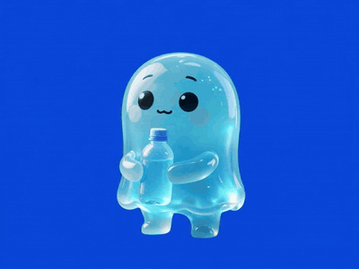
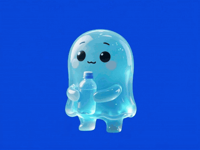
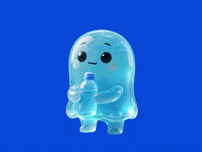

A mobile digital-pet health companion. Every step and every glass of water drives a mood that plays out as real animation — because a pet you can see feel better is one you actually take care of.

Most habit apps reward you with numbers on a screen. HeoPet gives you something to look at: a living creature whose wellbeing is literally derived from yours.
Because the phone already knows your steps, exercise needs no friction — it's measured automatically. Water, which a phone can't sense, is tracked by simple taps. Both feed one model of mood, which decides how the pet looks and moves in real time.
Steps kindle it. Water sustains it. The mood is the interface.
The core challenge was making a health state feel like a personality. Raw numbers don't charm anyone — so HeoPet translates metrics into a single, legible mood, then plays it back as motion.
daily progress + priority conflicts → mood index → video state → character animation
Every mood is its own animation. These clips loop in the app; below they're shown as lightweight GIFs cut directly from the rendered ocean-blue comps so you can see the expressions actually play.

The calm resting state — the pet at ease with the day going well.

Good pacing on the metrics — a light, content bounce.

High activity met — the pet visibly full of beans.

Active movement — shown as the day's steps build up.

The water tap in action — rewarded instantly on every sip.

Hydration lagging — a gentle nudge to grab that next glass.
Full clip set — including thirsty-mild, thirsty-severe and sluggish — ships in the app; these six capture the core of the loop.
A one-day loop fades fast. HeoPet layers a progression system on top so consistent care matters day over day.
The daily loop draws you in. Progression keeps you coming back.
Manual water is a trust problem. A phone can count steps but not sips. The tap system is honest and simple, but it relies on the user to log — the one piece of friction in an otherwise automatic loop.
Video states are static storytelling. Pre-rendered clips look great but don't interpolate between needs. A blend between states could feel even more alive.
Mood can collapse to a few archetypes. Eight states cover the core well, but real wellbeing has more nuance — richer states would deepen believability.
A habit isn't a checklist. It's something you care about.
HeoPet turns abstract goals into a character you can see respond. The pet's mood — played back as animation — makes a 10,000-step day or a logged glass of water feel meaningful in the moment. It's a simple idea with a strong execution: metrics on the inside, personality on the outside.
App source, mood engine, and the full work log are open on GitHub.